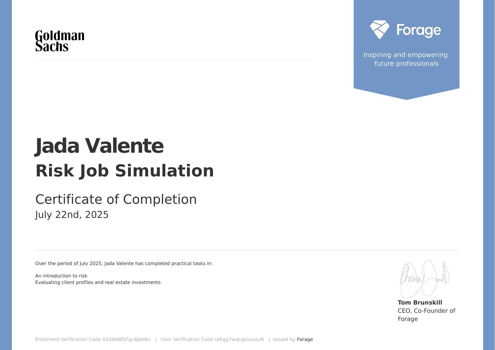
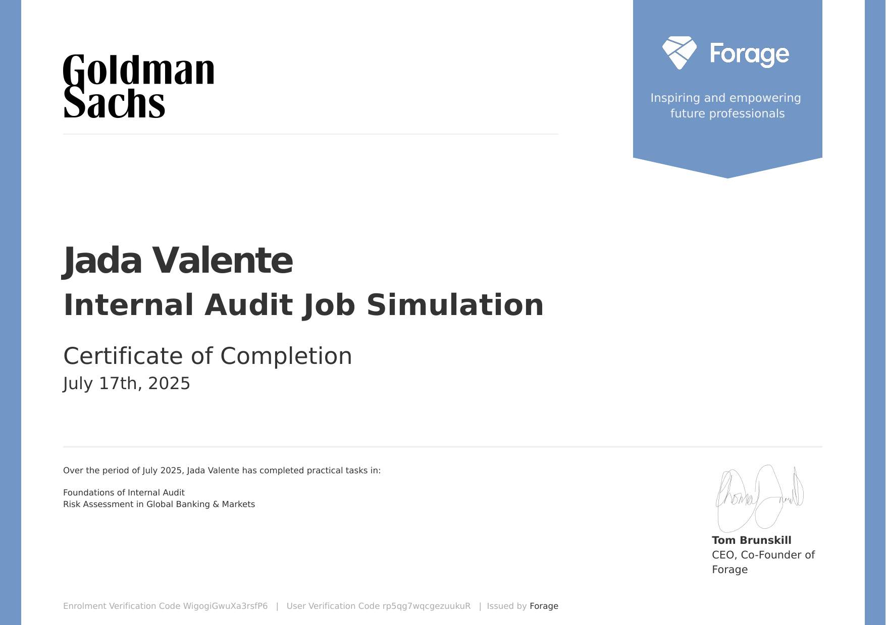

About Me
I am a Rutgers Business School finance student interested in asset and wealth management, with experience in leadership, relationship-building, and professional development.
Skills
Projects
Goldman Sachs — Risk Job Simulation
Completed a Goldman Sachs Risk Job Simulation through Forage, completing practical tasks focused on an introduction to risk and evaluating client profiles and real estate investments.
Certificate of Completion — July 22, 2025

Goldman Sachs — Internal Audit Job Simulation
Completed a Goldman Sachs Internal Audit Job Simulation through Forage, completing practical tasks focused on the foundations of internal audit and risk assessment in Global Banking & Markets.
Certificate of Completion — July 17, 2025
